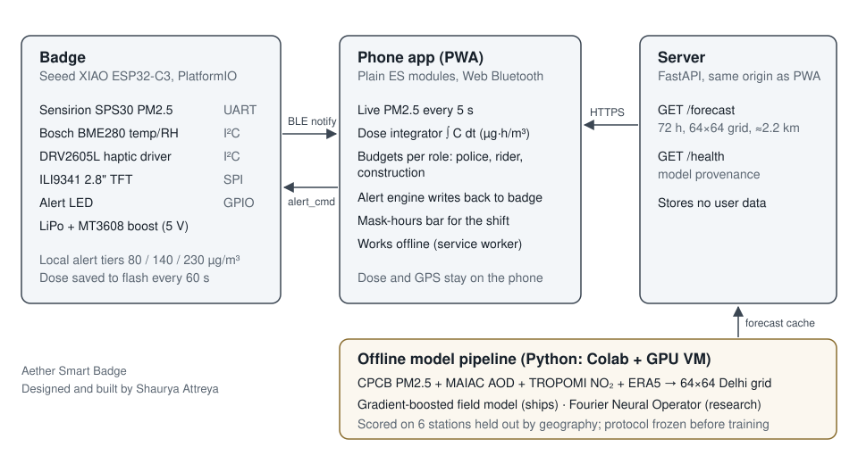
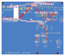
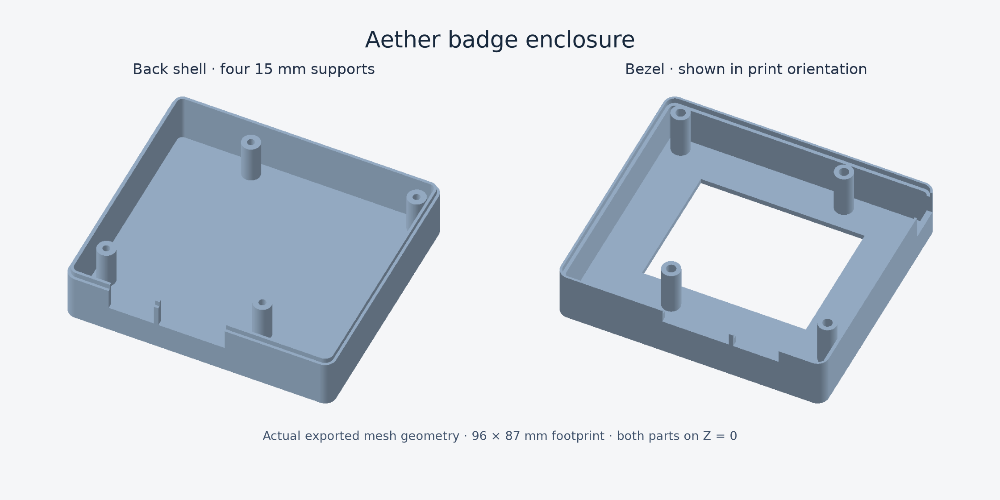

Aether Smart Badge
A clip-on badge that measures the PM2.5 an outdoor worker breathes, buzzes before exposure gets dangerous, and adds up the dose over a shift. A phone app reads it over Bluetooth and shows a 72-hour pollution forecast for Delhi.
Designed and built by Shaurya Attreya
Source code · GitHub · Portfolio
- My role
- Solo build: firmware, PCB, enclosure, phone app, API server, forecast model
- Built for
- vivo Ignite 2026, a national student innovation competition in India
- When
- July to September 2026
- Stack
- C++ on ESP32-C3 (PlatformIO) · JavaScript PWA with Web Bluetooth · Python, FastAPI · PyTorch, scikit-learn, ONNX · KiCad, CadQuery, FreeCAD
- Parts cost
- ₹4,433 for the core build
Why
Delhi publishes hourly air-quality numbers for the city and for about forty monitoring stations. A traffic constable standing at one junction for eight hours breathes something different, and nobody records what they accumulate. The badge measures at the person, and the phone integrates concentration over time into a dose in µg·h/m³, compared against a budget for that job.

The badge
A Seeed XIAO ESP32-C3 reads a Sensirion SPS30 laser particle sensor over UART and a BME280 for temperature and humidity over I²C. It shows the reading on a 2.8" TFT, drives a haptic motor and an alert LED, and sends readings to the phone every 5 seconds over a custom BLE GATT service. Dose is saved to flash every minute so a reset does not lose the shift.
The badge has its own alert thresholds so it still works with no phone nearby. When the phone is connected it can escalate the alert using dose and forecast, but it can never lower one.
firmware/src/main.cpplines 207–224 on GitHub
// HW.11 — the badge decides for itself when no phone is paired, and the app's
// richer decision (which knows dose and forecast) overrides it while fresh.
AlertTier decideAlert() {
AlertTier local = ALERT_NONE;
if (state.pm25 != PM25_FAULT) {
if (state.pm25 >= LOCAL_THRESHOLD_DANGER) local = ALERT_DANGER;
else if (state.pm25 >= LOCAL_THRESHOLD_CAUTION) local = ALERT_CAUTION;
else if (state.pm25 >= LOCAL_THRESHOLD_INFO) local = ALERT_INFORMATION;
}
// The phone can raise the alert using dose and forecast context, but it can
// never lower a live safety alert. A stale or malformed phone must not be
// able to silence the badge.
if (!ble.hasAppAlert()) return local;
return (ble.appAlert() > local) ? ble.appAlert() : local;
}Bring-up had real hardware faults. One was an I²C sensor that latched the bus low mid-byte. A CPU reset doesn't clear that, because the sensor never loses power, so the firmware clocks the stuck byte out by hand at boot:
firmware/src/main.cpplines 59–102 on GitHub// An I2C slave interrupted mid-byte keeps holding SDA low and the bus stays
// dead. A CPU reset does not fix it -- the sensor never loses power, so the
// latch survives resets, reflashes and the USB download handshake. Only a
// power cycle or this routine clears it: release SDA, pulse SCL up to nine
// times to walk the stuck byte out, then issue a STOP.
//
// Observed on 10 Aug 2026: the bus sat at SDA=0 SCL=0 across many resets and
// came back only when the USB cable was pulled.
static void recoverI2cBus() {
pinMode(PIN_I2C_SDA, INPUT_PULLUP);
pinMode(PIN_I2C_SCL, INPUT_PULLUP);
delay(5);
if (digitalRead(PIN_I2C_SDA) == HIGH && digitalRead(PIN_I2C_SCL) == HIGH) return;
Serial.printf("[i2c] bus stuck (SDA=%d SCL=%d), recovering\n",
digitalRead(PIN_I2C_SDA), digitalRead(PIN_I2C_SCL));
pinMode(PIN_I2C_SCL, OUTPUT_OPEN_DRAIN);
digitalWrite(PIN_I2C_SCL, HIGH);
for (int i = 0; i < 9 && digitalRead(PIN_I2C_SDA) == LOW; ++i) {
digitalWrite(PIN_I2C_SCL, LOW);
delayMicroseconds(10);
digitalWrite(PIN_I2C_SCL, HIGH);
delayMicroseconds(10);
}
// STOP condition: SDA released while SCL is high.
pinMode(PIN_I2C_SDA, OUTPUT_OPEN_DRAIN);
digitalWrite(PIN_I2C_SDA, LOW);
delayMicroseconds(10);
digitalWrite(PIN_I2C_SCL, HIGH);
delayMicroseconds(10);
digitalWrite(PIN_I2C_SDA, HIGH);
delayMicroseconds(10);
pinMode(PIN_I2C_SDA, INPUT_PULLUP);
pinMode(PIN_I2C_SCL, INPUT_PULLUP);
delay(5);
Serial.printf("[i2c] after recovery SDA=%d SCL=%d%s\n",
digitalRead(PIN_I2C_SDA), digitalRead(PIN_I2C_SCL),
(digitalRead(PIN_I2C_SDA) == HIGH && digitalRead(PIN_I2C_SCL) == HIGH)
? "" : " -- still stuck, power cycle the badge");
}The phone app
An installable web app with no framework and no build step at serve time. It connects to the badge with Web Bluetooth, integrates dose, decides alerts per job role (traffic police, delivery rider, construction), and shows which hours of the shift need a mask. Dose and location history stay on the phone. 142 tests cover the logic, colour contrast and render performance.
The dose integrator uses the trapezoid rule between readings. A sensor fault breaks continuity, so the next good reading cannot integrate across a gap with no data:
app/js/dose.mjslines 37–70 on GitHubfunction addSample(pm25, timestamp) {
if (pm25 === null || pm25 === undefined || !Number.isFinite(pm25)) {
// A fault is unmonitored time. Break continuity so the next valid
// reading cannot integrate across a period for which no samples exist.
state.lastSample = null;
return 0;
}
const sampledAt = timestamp || now();
if (state.startedAt === null) state.startedAt = sampledAt;
let increment = 0;
if (state.lastSample) {
const gapSeconds = (sampledAt - state.lastSample.t) / 1_000;
if (gapSeconds > 0 && gapSeconds <= AETHER.MAX_GAP_SECONDS) {
const meanConcentration = (state.lastSample.pm25 + pm25) / 2;
increment = (meanConcentration * gapSeconds) / 3_600;
state.doseUgHours += increment;
const band = aqiBand(meanConcentration).name;
state.bandSeconds[band] = (state.bandSeconds[band] || 0) + gapSeconds;
state.bandDose[band] = (state.bandDose[band] || 0) + increment;
}
}
state.lastSample = { t: sampledAt, pm25 };
state.samples.push({ t: sampledAt, pm25, dose: state.doseUgHours });
if (state.samples.length > MAX_SAMPLES) state.samples.shift();
state.peak = Math.max(state.peak, pm25);
state.sum += pm25;
state.count += 1;
return increment;
}Run a shift through the app's code
This runs the app's own dose.mjs and alerts.mjs in your browser, one reading per minute. The exposure patterns are illustrative, not measurements. The budget is 15 µg/m³ × shift hours × a job's exertion factor: a reference point, not a regulatory limit. The forecast input to the alerts is left out here.
The forecast model
The server publishes a 72-hour PM2.5 forecast on a 64 × 64 grid over Delhi, about 2.2 km per cell. Inputs are CPCB station readings, MODIS MAIAC aerosol optical depth, TROPOMI NO₂ and ERA5 weather (wind, boundary-layer height, temperature, humidity).
Explore the forecast
The forecast file the server ships: a hindcast from the gradient-boosted model starting 2 October 2025, not a live feed. Fields between its directly trained horizons are linearly interpolated, and values are rounded to whole µg/m³. Hover for a cell's value, click to select it, or drag the slider to move through the 72 hours. Place markers are approximate.
Read the middle of the map, not the edges. The model trains only at station cells, with grid row and column among its inputs, and its PM2.5 inputs stop 40 km from the nearest station. The hard-edged blocks near the edges are artefacts of that extrapolation, not pollution sources.
I trained two models: a Fourier Neural Operator and a gradient-boosted field model. Before the first training run I committed an evaluation protocol: six stations held out by geography, a frozen test winter, and a pass mark of beating persistence at +24 hours. The FNO missed that mark. The gradient-boosted model passed, so it ships, and the app labels which model produced the forecast.
Forecast error by horizon, µg/m³
| Horizon | Model MAE / RMSE | Persistence MAE / RMSE |
|---|---|---|
| +1 h | 52.14 / 83.05 | 16.65 / 41.02 |
| +6 h | 50.11 / 80.33 | 58.66 / 100.71 |
| +24 h | 51.14 / 84.62 | 51.86 / 99.46 |
| +48 h | 52.60 / 87.29 | 60.66 / 108.94 |
| +72 h | 53.47 / 88.07 | 64.78 / 114.55 |
µg/m³ on held-out stations, frozen test winter. Persistence means "the next hours look like now". It wins the first hour; after that the model's error stays flat while persistence's grows. Winter concentrations average 150–190 µg/m³.
The FNO had to export to ONNX for the server, and the FFT ops did not survive the export. I wrote the spectral layer a second way, as explicit DFT matrix multiplies, and a self-test checks that the two paths agree:
model/fno.pylines 28–38 on GitHubdef _dft_matrix(n: int, dtype=torch.float32) -> tuple[torch.Tensor, torch.Tensor]:
"""Real and imaginary parts of the n-point DFT matrix.
Used by the export-friendly path. Returns (cos, sin) each of shape
(n_freq, n) where n_freq = n // 2 + 1, matching rfft's output length.
"""
n_freq = n // 2 + 1
k = torch.arange(n_freq, dtype=dtype).unsqueeze(1) # (n_freq, 1)
x = torch.arange(n, dtype=dtype).unsqueeze(0) # (1, n)
angle = -2.0 * torch.pi * k * x / n
return torch.cos(angle), torch.sin(angle)model/fno.pylines 118–189 on GitHubdef _forward_dft(self, x: torch.Tensor) -> torch.Tensor:
"""Same transform via explicit matmul, so it survives ONNX export."""
batch, _, height, width = x.shape
scale = 1.0 / (height * width) ** 0.5 # matches norm="ortho"
cos_h, sin_h = _dft_matrix(height, x.dtype)
cos_w, sin_w = _dft_matrix(width, x.dtype)
cos_h, sin_h = cos_h.to(x.device), sin_h.to(x.device)
cos_w, sin_w = cos_w.to(x.device), sin_w.to(x.device)
# Transform along width, then height. Real input, so start with
# zero imaginary part.
xr = torch.einsum("bchw,kw->bchk", x, cos_w) * scale
xi = torch.einsum("bchw,kw->bchk", x, sin_w) * scale
# Full (not one-sided) transform along height, so negative
# frequencies are addressable the same way as in the FFT path.
full_h = torch.arange(height, dtype=x.dtype, device=x.device)
k_h = torch.arange(height, dtype=x.dtype, device=x.device).unsqueeze(1)
angle_h = -2.0 * torch.pi * k_h * full_h.unsqueeze(0) / height
cos_full, sin_full = torch.cos(angle_h), torch.sin(angle_h)
xr2 = torch.einsum("bchk,jh->bcjk", xr, cos_full) - torch.einsum(
"bchk,jh->bcjk", xi, sin_full
)
xi2 = torch.einsum("bchk,jh->bcjk", xr, sin_full) + torch.einsum(
"bchk,jh->bcjk", xi, cos_full
)
out_r = torch.zeros(
batch, self.out_channels, height, width // 2 + 1,
dtype=x.dtype, device=x.device,
)
out_i = torch.zeros_like(out_r)
for sign, index in ((0, slice(None, self.modes_h)), (1, slice(-self.modes_h, None))):
real, imag = self._complex_mul(
xr2[:, :, index, : self.modes_w],
xi2[:, :, index, : self.modes_w],
self.weight_real[sign],
self.weight_imag[sign],
)
out_r[:, :, index, : self.modes_w] = real
out_i[:, :, index, : self.modes_w] = imag
# Inverse: conjugate transpose of the forward matrices.
yr = torch.einsum("bcjk,jh->bchk", out_r, cos_full) + torch.einsum(
"bcjk,jh->bchk", out_i, sin_full
)
yi = torch.einsum("bcjk,jh->bchk", out_i, cos_full) - torch.einsum(
"bcjk,jh->bchk", out_r, sin_full
)
# One-sided inverse along width: DC and Nyquist counted once, the
# rest twice, which is what reconstructs a real signal.
weight = torch.full((width // 2 + 1,), 2.0, dtype=x.dtype, device=x.device)
weight[0] = 1.0
if width % 2 == 0:
weight[-1] = 1.0
# Re[(yr + i*yi) * exp(+i*theta)] where exp(+i*theta) = cos_w - i*sin_w,
# since _dft_matrix builds its angles negated. That expands to
# yr*cos + yi*sin — a PLUS. It was a minus here, which left the
# standalone layer wrong by ~1e-1 while the assembled model still
# squeaked under an absolute 1e-4 tolerance on smaller activations.
cos_iw, sin_iw = cos_w, sin_w
out = (
torch.einsum("bchk,kw->bchw", yr * weight, cos_iw)
+ torch.einsum("bchk,kw->bchw", yi * weight, sin_iw)
) * scale
return outHardware
The carrier PCB is generated by Python scripts rather than drawn by hand, so placement, routing and silkscreen rebuild from one geometry file. Two layers, 82 × 71 mm, DRC and ERC clean in KiCad.

The enclosure is parametric in both CadQuery and FreeCAD, with printable STL and STEP files in the repository.

Limits
The PM2.5 sensor is not calibrated against a reference monitor yet. Optical sensors read high in humid air, which is Delhi in winter, so dose works for comparing shifts and places but not as an absolute number. The forecast in the demo is a replay of October 2025, labelled as such in the app, not a live feed. Calibrating against a CPCB station is the next step.
The dose budget is a heuristic, not an exposure limit, and its exertion factor needs rework. A higher factor currently raises a job's budget, although harder breathing should lower it, and dose is not yet weighted by breathing rate.